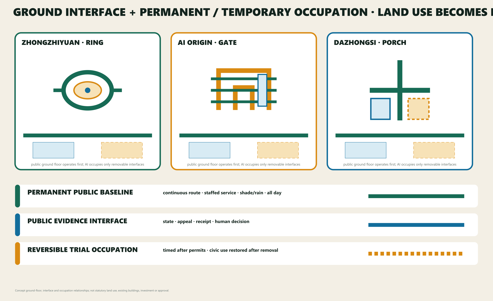
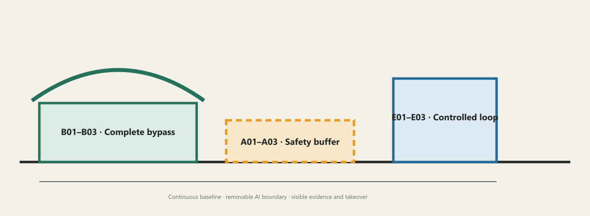
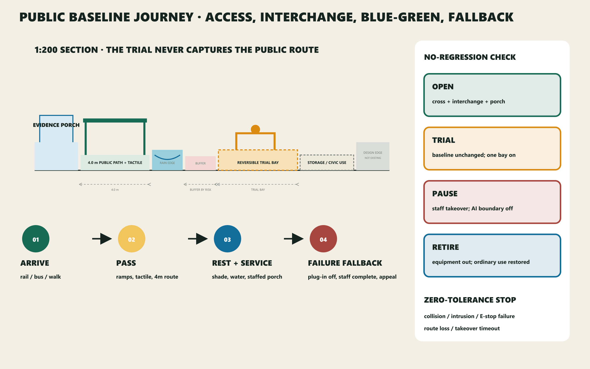
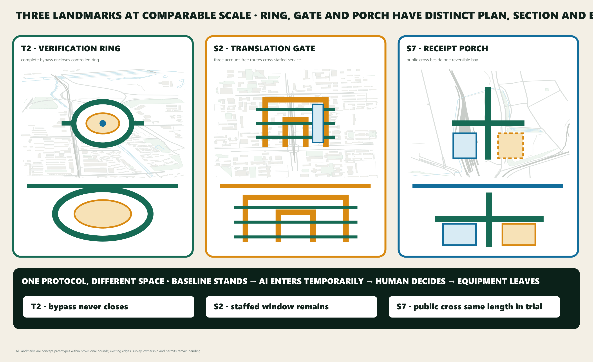
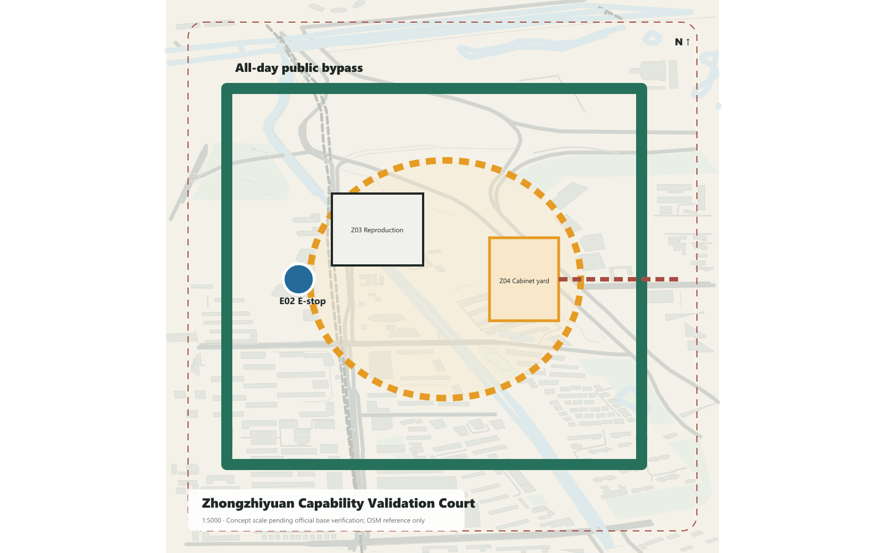
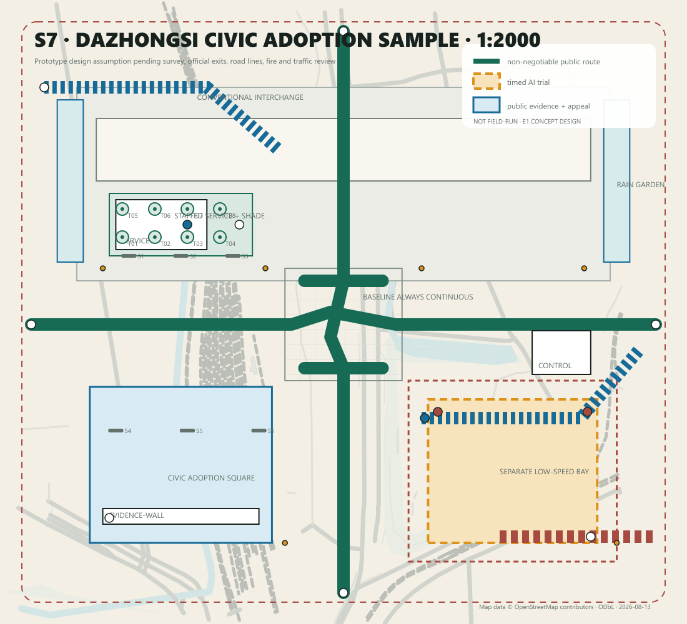
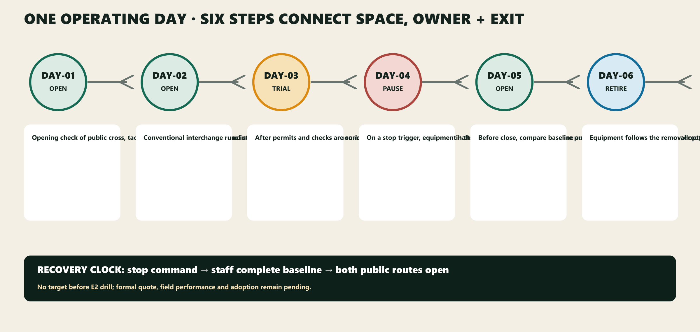
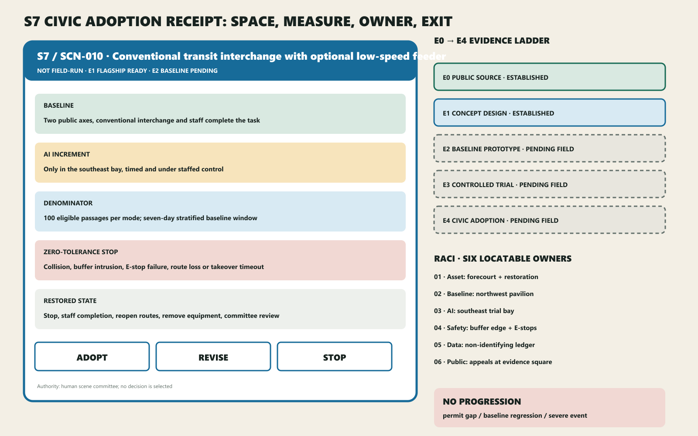

JING-ZHANG TWO ANSWERS / 京张双答
Three spatial alternatives, one public rejection and one reviewable selection: geometry audit eliminates designs that sacrifice the public route; field performance remains unknown.
JING-ZHANG TWO ANSWERS / 京张双答
Civic Adoption Compiler: three spatial alternatives, one public rejection and one reviewable selection. Ordinary service stands first; AI enters only the same-task test. Any spatial option that severs the public route must be rejected by the compiler. Field decisions remain
adopt / revise / stopand belong to a human scenario committee.
Three unmistakable receipt landmarks—Zhongzhiyuan Verification Ring, AI Origin Translation Gate and Dazhongsi Receipt Porch—remain the spatial prototypes. S7 adds a 1:50 construction node to its 1:5000, 1:2000, 1:500, 1:200 and assembly views. Twelve scenarios each run seven deterministic tabletop cases, producing 84 rerunnable synthetic design-contract checks without adding scenes.Spatial data Spatial data Metric
V11 has three locatable conclusions: ring, gate and porch have independent silhouettes; the public cross stays continuous through OPEN / TRIAL / PAUSE / RETIRE; and any failed permit, role, baseline or transition blocks advancement. Without titles, reviewers should distinguish the landmarks; without a legend, they should locate tactile guidance, the separate trial bay, staffed posts, E-stops, fire access and removal direction.Spatial data Spatial data
<!-- V11_DECISION_START -->
One Real Spatial Decision
The Civic Adoption Compiler no longer treats an all-green matrix as excellence. V11 generates three spatial alternatives for the same S7 task, users and site, then audits each with identical geometry gates: ALT-A Central Mixed Bay is rejected, ALT-B Split Bays returns for revision, and ALT-C One-sided Reversible Bay advances. These reject_design / revise_design / advance_design labels describe design alternatives, not field adoption; only a human committee may later issue adopt / revise / stop.Spatial data Metric
ALT-A severs the public cross and conflicts with fire access, retirement and staffed E-stop reach, failing six hard gates. ALT-B preserves the public routes but splits two trial bays, two retirement paths and supervision posts across about 94.9 metres, producing three revision flags. ALT-C keeps the 372-metre concept public-route total unchanged in trial state, concentrates a 2,496-square-metre trial and 3,840-square-metre reversible buffer on one side, and limits the furthest E-stop-to-staff distance to a 24.3-metre prototype assumption.Metric Metric Spatial data
The figures use a local equidistant approximation centred on the Dazhongsi prototype. They audit design geometry only; they do not establish surveyed conditions, transport performance, fire approval or safety performance. Any change in the official base, station entrance, ownership or professional constraints must rerun the audit, and drawings and prose must follow the calculation.Spatial data Depth <!-- V11_DECISION_END -->
Design Basis and Source List
Jing-Zhang Two Answers defines the Centennial Jing-Zhang AI Innovation Belt as a public-baseline-first civic proving line. The permanent layer delivers continuous accessibility, walking, cycling, blue-green space, shade, static signs, staffed desks and conventional interchange. AI may enter only as a time-bounded, optional, stoppable and removable plug-in. A public evidence interface compares both paths with shared measures.Source Source
All boundaries, key areas, land-use interfaces, building envelopes and nodes are conceptual proposals under provisional geometry—not official boundaries, road redlines, ownership or statutory controls. Missing survey, utilities, fire, heritage, buildings, users and performance remain unknown. Generated images are concepts, never site evidence.Source Source
Culture and site context use official public sources only. Beijing's Jing-Zhang park interpretation and phase-one/two notices support the railway-memory, continuous-park and public-space background; the municipal Zhongguancun history supports a culture of experiment, transfer and sharing; Dazhongsi rail material supports directional context only. None proves exact exits, buildings, redlines or ownership.Source Source Source Source Source
Three-Level Scope Framework
The 43.6 km² coordinated research context organises capability exchange; the roughly 11.4 km² provisional overall design area carries the public baseline; three provisional key areas totalling roughly 368.4 ha host full-scale prototypes. All share one protocol and evidence chain.Spatial data
Coordinated Research Area: Industry and Future City Research
The regional diagram exchanges problems, evidence and capabilities: Beiwei for founder and alumni service; Future Science City for application demand; Huairou for research facilities and instruments.Source Source Source
E-Town connects engineering, manufacturing and scenarios; Beijing–Tianjin–Hebei connects facilities, computing and industrial transfer. Every interface stays conceptual until accountable parties and agreements exist.Source Source
Seven primary/official references transfer one mechanism each: long-term shared operations from one-north; renewal plus knowledge district from 22@; and evidence-led scenarios from Paris-Saclay.Source Source Source
Brainport contributes shared labs, Helsinki a public AI register, and Woven City a controlled test course.Source Source Source
Toronto Quayside is used only for binding public-interest and phase commitments. None proves a Beijing control condition.Source

Overall Design Area: Urban Renewal and Regulatory-Plan-Level Urban Design
The Civic Adoption Compiler grounds the protocol in three civic landmarks, four-season operation, a five-level evidence chain and a deterministic state machine. The OSM snapshot contains only one building feature in the Dazhongsi context, so roads, rail, water and parks remain directional reference while a visible “open-data gap” hatch identifies missing building context. Every proposed edge is a design assumption rather than an existing building or statutory plan.
Each station moves from a 1:5000 city link to a 1:2000 plan; hero scenes add a 1:500 detail and 1:200 section, while S7 continues to a 1:50 assembly node and layered axonometric. Zhongzhiyuan retains its ring court and complete bypass; AI Origin retains its no-account porous hall; Dazhongsi becomes a public cross, southeast reversible trial bay, southwest evidence porch and two blue-green edges. Dimensions are prototype decisions, not measured conditions.
The 43.6 km² research context organises capability exchange; the roughly 11.4 km² provisional design scope carries the public baseline; three provisional key areas totalling roughly 368.4 ha host full-scale prototypes. The Public Baseline Spine links the Zhongzhiyuan Capability Validation Station, AI Origin Public Translation Station and Dazhongsi Civic Adoption Station. The Zhongguancun Service Wing supplies legal, IP, evaluation, finance and international services; the Xiaoyuehe Scene Wing brings resident problems, climate resilience and everyday feedback.Spatial data
Six east–west stitches, STITCH-01—06, give each proof field two addressed links between surrounding neighbourhood entrances and the baseline spine. They state walking, accessibility and service-interface priorities rather than road redlines. The overall axonometric uses the same SCN-001—012 nodes as the detailed plans, data and exhibit.Spatial data Metric
Core concept: three spatial components and the protocol
Every location uses only three component classes: permanent public baseline; removable AI plug-in; public evidence interface. The AI layer is admitted only when the ordinary answer works independently, both paths serve the same task and users, accessibility/equity/reliability do not regress, data/energy/labour/lifecycle can be recorded, and a human owner, stop condition and restoration route exist.Metric
The three classes resolve into nine stable component IDs: B01 continuous step-free path, B02 shade/seating/water, B03 static signs and staffed service; A01 low-speed robot bay, A02 edge-compute cabinet, A03 optional service terminal; E01 state and metric board, E02 human takeover and emergency stop, E03 feedback, appeal and exit notice. The IDs recur in the atlas, station plans, scenario data and exhibit. Each also records spatial/interface demand, minimum public-route separation, power/data/staff/maintenance interfaces, open–trial–pause–retire states and its retirement destination.Spatial data Metric
The protocol is simultaneously a spatial concept, repeatable operating mechanism, governance system and scenario network. It can travel from test courts to public service, heritage, mobility and climate settings, but every location must pass its own local gate.
V11 fixes the supporting proposition as “Verification forms a ring, translation forms a gate, adoption forms a porch; rules compile first, the field proves later.” To preserve traceability to merged versions, S7 keeps stable V7-D-* geometry IDs; the prefix is an object lineage, not the publication version. Baseline paths, tactile guidance, ramps, crossings, curbs, interchange, trial boundary, porch, staff, E-stops, fire, storage and removal still resolve through one WGS84 chain.Spatial data Metric
Evidence progresses through E0 public source → E1 concept design → E2 documented prototype ready → E3 controlled trial pending → E4 civic adoption pending. S7 is E2_documented_prototype_ready; T2/S2 are E1_concept_design; T0_synthetic_contract_verified is a separate rule-consistency status, not a field level. E2 does not mean survey, permits, assembly or field baseline. Every publication shows NOT FIELD-RUN.Metric Metric

V11 Civic Adoption Compiler: 84 synthetic checks and E2 documentation
One S7 model now drives the 1:5000 link, 1:2000 plan, 1:500 component detail, 1:200 section, 1:50 ramp/tactile–barrier–evidence–power–rainwater node and layered assembly axonometric. E2 means that quantities, eight permit gates, procurement packages and five blank forms are reviewable; it does not mean survey, permits, procurement, assembly or field operation have occurred.Spatial data Metric
The compiler runs seven cases for each of SCN-001—012: ordinary baseline, missing permit, missing role, public-service regression, zero-tolerance event, human recovery and equipment retirement. It accepts only OPEN→TRIAL, TRIAL→PAUSE, PAUSE→OPEN, PAUSE→RETIRE and RETIRE→OPEN. Illegal jumps, incomplete permits/roles, interrupted public routes or field unknowns presented as known fail the build. The script actually generated and passed 84/84 cases as synthetic_design_verification; this is not field simulation or safety certification.Spatial data Metric
The ordinary public cross and staffed service must be surveyed and logged for seven consecutive operating days first. The southeast trial bay may enter TRIAL only after site, title, fire, accessibility, temporary power, network, traffic-management and equipment-safety gates are closed and four independent posts are staffed. Collision, buffer intrusion, emergency-stop failure, interruption of a public route or failed human takeover triggers a zero-tolerance stop. The recovery clock runs from the stop command until staff complete the same task and both public routes reopen. Recovery time remains unknown / not_field_run.
The three landmarks retain different spatial archetypes: the Verification Ring wraps a controlled inner ring with a complete public bypass; the Translation Gate carries three account-free paths past staffed service and professional review; the Receipt Porch combines a public cross, one-side trial bay and staffed evidence interface. All three experiential views are geometry-matched concept images, not evidence of existing conditions, dimensions or performance.
Overall design: renewal, mobility, blue-green and baseline
Renewal follows baseline → ground floor → envelope. First repair crossings, ramps, tactile cues, lighting, shade, seating, water and staffed service. Then open existing ground floors for evaluation, translation and operations. Only after survey, ownership and statutory controls may intensity or retain/renovate/rebuild decisions be made. Submitted building polygons are conceptual adaptive envelopes.Spatial data
The typical section aligns a 3.0 m step-free walk, 2.5 m cycle lane, 1.8 m shaded rest band, controlled plug-in bay, blue-green buffer and rail memory. Dimensions are prototypes subject to survey, utilities, fire and transport engineering. Ordinary movement never crosses the robot test bay.Depth

Detailed Design of Key Areas

Zhongzhiyuan Verification Ring combines a controlled loop, complete bypass, staffed safety desk and removable cabinet bay for T1–T3. Its ring silhouette makes the public outside and controlled inside legible. The honour interface publishes task, evidence level, failure reason, decision and review date—not unverified company rankings.Spatial data Spatial data
Hero scenario T2 places the B01 bypass, suggested 4.0 m A01 controlled lane, suggested 1.5 m safety buffers, E02 stop sightline, two staff positions and equipment-removal route in the same 1:500 detail and 1:200 section. These dimensions are unverified prototype proposals. Buffer intrusion, two consecutive near misses or E-stop failure are zero-tolerance stop events.Spatial data

AI Origin Translation Gate uses three no-account step-free passages through a gate-like public interface, staffed desks, co-creation tables and a closeable plug-in wall for S1–S3. When AI closes, bilingual static guidance and human review remain complete and visible.Spatial data Spatial data
Hero scenario S2 overlays three barrier-free passages, a staffed bilingual arrival desk, closeable optional terminal, professional review back office and nearest human escalation route. With AI closed, paper maps, static signs, telephone booking and staffed reception still complete the same task.Spatial data

Dazhongsi Receipt Porch is the V11 flagship: public cross, conventional interchange, southeast reversible trial bay, southwest evidence porch and blue-green edges. OSM cannot confirm exact exits or complete building edges; the four entrances remain directional interfaces and the southern data gap is visible. AI enters only the southeast bay; the porch gathers staffed service, status, appeals and the adoption decision, while removal restores waiting, short stay or civic activity.Spatial data Spatial data
S7 combines two 4.0 m prototype public axes, 0.4 m tactile guidance, two curb ramps, interchange, waiting and shade, rain gardens, separate low-speed bay, evidence porch, safety buffer, evacuation, staff and storage/removal. Dimensions are reviewable assumptions used only to prove that baseline routes never cross the trial boundary.Spatial data Spatial data
Four states change space. OPEN uses the public cross, interchange, staffed service and evidence porch. TRIAL activates only the southeast bay, buffer, trial post and two E-stops. PAUSE closes AI while staff complete the task and the cross stays open. RETIRE moves equipment to storage or supplier return and restores the bay. The porch remains the public status, appeal and exit interface.Spatial data Spatial data
The S7 denominator is specified while results remain unknown. After the E2 baseline prototype, each mode records 100 eligible passages, stratified by peak/off-peak, day/night, weather and assistance need. Severe collision, buffer intrusion, E-stop failure, baseline-route interruption or takeover timeout stops the trial without waiting for sample completion. The human scene committee registers any AI-increment threshold only after seven consecutive baseline operating days.Metric Spatial data
RACI is spatially located: the asset representative owns forecourt, storage and restoration; baseline staff occupy the evidence porch; AI controls only the southeast bay; safety controls the buffer and E-stops; data maintains a manual, non-identifying ledger; the public representative reviews appeals at the porch. During TRIAL, the safety lead and ordinary-service post cannot be held by one person. A missing permit or minimum post keeps S7 in OPEN.Spatial data Spatial data
The 16-item kit converts feasibility into reproducible design quantities: public paving, tactile guidance, ramps, rain gardens, shade, seats, water, lighting, removable barriers, E-stops, state boards, staffed service, control, edge cabinet, manual counting and storage. Each records its quantity formula, assembly state, maintenance owner and retirement destination. Unit and total prices remain pending_market_quote; total cost is only “quantity × formal quotation”.Metric Metric
The operating day has six steps: opening check; independent baseline; controlled trial after permits; staffed takeover on stop; closing comparison; storage or supplier return. Recovery time starts at the stop command and ends when staff complete the ordinary task and both public routes reopen; no target is invented before the E2 drill.Spatial data

The three prototypes deliberately do not share one plan type: a controlled ring and bypass resolves human–machine safety; a porous hall makes staffed translation public; a four-quadrant forecourt keeps conventional mobility dominant. Each situates baseline, plug-in and evidence interface so they remain mutually visible without making ordinary service dependent on AI.Metric
S7 uses six review views: 1:5000 connection, 1:2000 plan, 1:500 detail, 1:200 section, 1:50 assembly node and layered axonometric; T2/S2 add their defining local details so ring, gate and porch remain identifiable without titles. Every scale is a prototype pending survey and official-base verification.Spatial data
AI Innovation Ecosystem, Personas, and AI+ Scenarios
The three hero scenarios carry professional review depth; nine catalogue scenes carry replication breadth. All 12 retain stable IDs, map nodes, components, accountable humans, common metrics, stop events and restored states, but only T2, S2 and S7 receive full plan–detail–section–operation–receipt space in this edition.
Six stress-test profiles cover wheelchair users, pedestrians with visual impairment, older adults without smartphones, residents/caregivers, international researchers/startups, and night operations staff. T1–T3 are industry tests; S1–S9 are civic scenarios. IDs align across GeoJSON, data, drawings and the offline exhibit.Spatial data
| ID | Paired task | Space | Ordinary answer | Optional AI answer | Stop condition |
|---|---|---|---|---|---|
| T1 | Open model and data provenance reproduction | Capability Validation Court · reproduction room | A staffed registry, paper/offline checklist and manual licence review reproduce versions and provenance. | An optional assistant runs in isolation and produces a difference report without replacing professional sign-off. | Stop T1 when safety, rights, data minimisation, human takeover or reliable degradation fails; the human lead has final authority. |
| T2 | Controlled robot–pedestrian–accessibility test | Capability Validation Court · controlled loop | A safety steward, physical separation, pedestrian-priority route and manual emergency stop support the test. | An optional low-speed robot runs only inside a controlled window and records near misses and takeovers. | Stop T2 when safety, rights, data minimisation, human takeover or reliable degradation fails; the human lead has final authority. |
| T3 | Edge compute energy, noise and offline degradation test | Capability Validation Court · removable cabinet bay | Paper procedures, a staffed log and independent lighting keep the ordinary service operational. | A removable edge cabinet handles only necessary tasks and degrades to the staffed process when offline. | Stop T3 when safety, rights, data minimisation, human takeover or reliable degradation fails; the human lead has final authority. |
| S1 | Staffed enterprise service with optional AI triage | AI Origin Public Translation Hall · enterprise desk | A staffed desk and printed directory explain legal, IP, evaluation and finance routes. | Optional triage suggests the next desk from a public directory and never issues formal legal or investment advice. | Stop S1 when safety, rights, data minimisation, human takeover or reliable degradation fails; the human lead has final authority. |
| S2 | International arrival and civic-service navigation | AI Origin Public Translation Hall · arrival desk | A multilingual staffed desk, paper map, static signs and phone booking provide a complete arrival service. | Optional multilingual guidance explains public procedures and hands uncertain questions to staff. | Stop S2 when safety, rights, data minimisation, human takeover or reliable degradation fails; the human lead has final authority. |
| S3 | Open knowledge matching and community problem workshop | AI Origin Public Translation Hall · co-creation tables | A facilitator uses problem cards, a public directory and face-to-face workshops to match needs and resources. | An optional assistant searches licensed open knowledge and proposes candidates without setting community priorities. | Stop S3 when safety, rights, data minimisation, human takeover or reliable degradation fails; the human lead has final authority. |
| S4 | Staffed Jing-Zhang heritage tour with optional AI narration | Public Baseline Spine · rail-memory stop | Human guides, tactile models, static interpretation and a paper route provide a complete heritage service. | Optional narration uses verified sources, exposes citations and states uncertainty. | Stop S4 when safety, rights, data minimisation, human takeover or reliable degradation fails; the human lead has final authority. |
| S5 | Static accessible wayfinding with optional dynamic assistance | Public Baseline Spine · continuous accessible route | Ramps, tactile paving, high-contrast static signs and staffed help points form a continuous route. | Opt-in dynamic guidance reports barriers without continuous tracking. | Stop S5 when safety, rights, data minimisation, human takeover or reliable degradation fails; the human lead has final authority. |
| S6 | Shade, rest and extreme-weather service prompts | Xiaoyuehe Scene Wing · climate rest point | Trees, canopy, seating, water, noticeboard and human inspection provide the everyday climate service. | Optional on-device prompts combine public alerts and non-identifying sensors; staff decide opening and closure. | Stop S6 when safety, rights, data minimisation, human takeover or reliable degradation fails; the human lead has final authority. |
| S7 | Conventional transit interchange with optional low-speed feeder | Dazhongsi Civic Adoption Field · feeder bay | Rail, bus, taxi, walking links and staffed guidance remain continuously available. | An optional low-speed feeder runs only in a bounded bay and time window with pedestrians first. | Stop S7 when safety, rights, data minimisation, human takeover or reliable degradation fails; the human lead has final authority. |
| S8 | Staffed public-service desk with optional AI information guide | Dazhongsi Civic Adoption Field · civic desk | Staff, telephone, printed directory and a legible queue make the public-service desk complete. | An optional guide explains public information and immediately escalates uncertainty to staff. | Stop S8 when safety, rights, data minimisation, human takeover or reliable degradation fails; the human lead has final authority. |
| S9 | Conventional event operations with aggregate flow assistance | Dazhongsi Civic Adoption Field · event apron | Staffed ticketing, capacity signs, physical queues, evacuation lines and public address run the event. | Optional aggregate counting adjusts entrances without face recognition or individual trajectories. | Stop S9 when safety, rights, data minimisation, human takeover or reliable degradation fails; the human lead has final authority. |

Land Use, Building Scale, and Retain-Renovate-Demolish Strategy
Four conceptual interfaces—research/learning, heritage park, industry service and community life—organise the plan without changing statutory land use. Building scale, FAR, height and retain/renovate/demolish decisions remain unknown pending ownership, controls and survey. Three polygons test only public ground floor, removable equipment and adaptable upper space.Spatial data
Transport, Rail, Municipal Infrastructure, and Public Services
Conventional rail and bus services remain primary. The Baseline Spine completes walking, cycling, accessibility and staffed guidance. Edge equipment uses independent power, low-energy operation, offline degradation and whole-unit removal; utilities, fire, waste, drainage and emergency systems await formal survey.Spatial data
Blue-Green Network, Public Space, and Urban Character
The blue-green system retains mature trees, rail memory and continuous open space. Shade, rest, water, permeability and night safety form the ordinary answer. Graphite, green, amber and blue distinguish the three layers; AI hardware stays visually secondary and the public space remains complete after removal.Spatial data
Three receipt landmarks, the evidence mile and international communication
The landmarks share a heritage-graphite trace, public-green baseline, AI-amber joint and evidence-blue receipt plate, yet ring, gate and porch keep independent silhouettes. A City Evidence Mile along the baseline spine sequences “pose a problem—test publicly—decide humanly—leave a receipt”, linking verified Jing-Zhang railway memory, Zhongguancun's experimental culture and accountable AI without copying corporate marks or inventing history.Spatial data Metric
Every stop offers Chinese/English, high-contrast, tactile, paper and staffed access. The honour wall records only task, evidence level, decision, review date and contributor role—never an unverified technology ranking. International communication publishes reviewable receipts and failure reasons and never turns a proposed role into an institutional commitment.Source Source
Industry, talent and future-city programme
The operating loop is problem register → ordinary baseline → capability reproduction → controlled prototype → paired comparison → human adoption → annual review. Seven enduring roles are proposed: public problem owner, accessibility observer, model/data auditor, safety steward, night maintainer, multilingual service worker and scenario product manager. Rights, licensing, privacy and exit ownership are resolved before entry.Source
Global AI Innovation Programme and Long-Term Operation
The Civic Adoption Year turns a one-off exhibition into four public cycles: spring audits baseline/accessibility; summer opens capability and developer tests; autumn hosts civic trials and Public Adoption Week; winter publishes annual receipts, inventories assets and reviews exits. Every cycle records site, users, proposed accountable role, permit gate, ordinary service, AI increment, evidence output, stop event and archived knowledge. The cycles share one public-ledger schema, but no field record is invented.Spatial data Metric
Developer participation is not unrestricted access. Controlled tests begin only after permits, provenance, ordinary service and safety posts are ready; outputs must include reproduction conditions, failure reason, stop state and a publishable summary. People can inspect, appeal and request review through a staffed desk, paper receipt or no-account page. Annual knowledge is archived as problem card—baseline record—trial summary—human decision—review date.Spatial data Metric
Renewal Projects, Implementation Policy, and Phasing
Five work packages name conceptual operators, collaborators, permissions, start gates, risks, stop conditions and asset destinations. S7 adds 16 reproducible design quantities while unit prices, total price and procurement method remain pending formal quotation. Actor names do not imply confirmed participation.Depth Metric
T2, S2 and S7 share seven RACI roles. S7 locates them at the evidence porch, trial bay, buffer, E-stops, event ledger and storage/removal line. Permit prerequisites cover site, fire, accessibility, temporary power, network, traffic and equipment safety; any gap keeps the site in OPEN. The kit receives daily opening checks, pre-trial interlocks, monthly lighting checks, inventory and restoration acceptance.Spatial data
The near-term 0–6 month pilot establishes ordinary-service and accessibility baselines. Operators, collaborators and resident representatives then define measurable indicators, monitoring and evaluation before any AI pilot advances.
S7 also has a 90-day minimum pilot. Days 0–15 verify survey, ownership, exits, fire, utilities, accessibility and traffic. Days 16–30 build only the public routes, waiting, shade, staffed service and Receipt Porch. Days 31–45 establish the ordinary baseline over seven consecutive operating days. Days 46–75 permit a time-bounded trial only when permits and four minimum posts are in place. Days 76–90 run stop and removal drills, restore ordinary space, invite public review and sign adopt / revise / stop. Any failed gate pauses or returns the pilot.Spatial data Metric
Governance and exit
0–6 months: evidence, survey, ownership/control checks, accessibility audit, ordinary-service baseline, metric definitions and accountable staff. 6–12 months: three full-scale ordinary-answer prototypes only. 12–24 months: controlled removable AI enhancement and paired comparison. 24–36 months: adopt, revise or stop, with annual public review. Any stage may return to the ordinary answer.Spatial data
Each phase has entry, output and failure gates. Phase 0 advances only when source, permit route and accessibility audit are complete. Phase 1 outputs an independently usable ordinary service and E2 baseline; an incomplete baseline stays in Phase 1. Phase 2 begins only when zero-tolerance safety conditions, staffed RACI roles and measurable interfaces are all in place; any safety or rights event triggers PAUSE. Phase 3 accepts only reproducible evidence; insufficient evidence leads to revise or stop, never substitution by experience images or model self-scores.
A human scenario committee combines operator, accessibility/community, domain, data and safety voices. Suppliers disclose interests but do not control the final vote. Severe safety or rights events trigger immediate stop by the accountable site lead.

Metrics, Area Recalculation, and Compliance Matrix
Known design is limited to reproducible geometry, quantities and document coverage: 12 paired scenarios, three landmarks, four seasonal cycles and 16 S7 kit items. Synthetic verification is 12×7=84 deterministic cases; 84/84 pass means only that admission, transition, stop, recovery and retirement contracts are internally consistent. Field unknown includes safety performance, completion, satisfaction, energy, cost, accessibility failure and recovery duration. Every receipt remains not_field_run.Metric Metric Metric

Risk, Copyright, and Compliance
No-account entry, static/tactile guidance, staffed desks and conventional interchange make the service usable through outage, refusal or low digital ability. Key risks—provisional-boundary misuse, accessibility regression, robot near misses, wrong advice, data drift, energy/e-waste, staff gaps and public distrust—are controlled through spatial separation, gates, emergency stop, data inventory, asset destinations, rosters and public review. Drawings and images do not replace survey, engineering, statutory planning or permission.Depth
References
Source Source Source
OFFICIAL-ANNOUNCEMENTandAGENT-TASKBOOK: task and scope basis.BOUNDARY-SOURCE/KEY-AREA-SOURCE: provisional geometry only.CASE-ONE-NORTH,CASE-BARCELONA,CASE-PARIS-SACLAY,CASE-BRAINPORT,CASE-HELSINKI,CASE-WOVEN,CASE-QUAYSIDE: primary/official benchmark mechanisms.REGION-BEIWEI,REGION-FUTURE-SCIENCE-CITY,REGION-HUAIROU,REGION-ETOWN,REGION-CAPITAL-CIRCLE: regional interface background.SOURCE-REGISTRYandsources.jsonrecord publisher, date, URL, licence boundary, use and limitation.